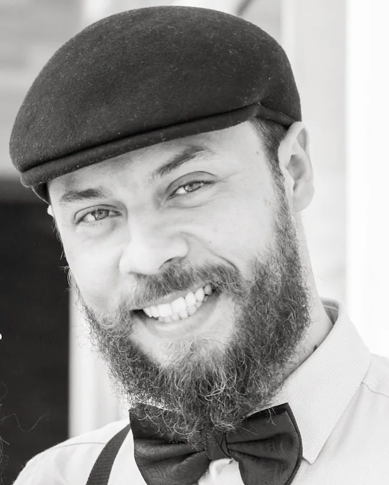
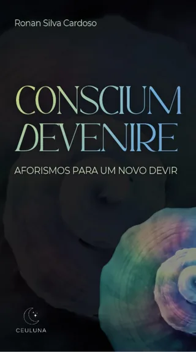
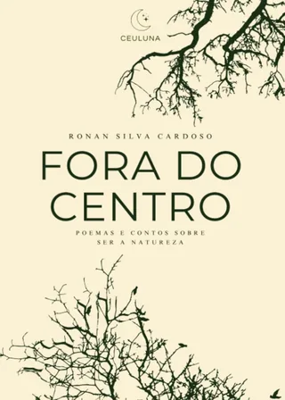

Semioticista, Escritor & Professor
O sentido da existência é comunicação.
Pesquiso, escrevo e ensino sobre as relações entre cognição, natureza, corpo, existência e sentido. Co-fundador do Instituto Mestra Natureza.

Sobre mim
"Sou Ronan S. Cardoso - uma inquieta alma sensível com o olhar voltado para o sentido da existência."
Pesquiso, escrevo e ensino sobre as relações entre cognição, natureza, corpo, existência e sentido. Conduzo práticas de banhos florestais e trilhas interpretativas com foco nos processos biossemióticos dos sistemas vivos.
Minha missão é ampliar a compreensão de existência como comunicação, um processo semiótico onde o cosmos narra a si, e sobre como a vida incorpora aprendizado convertendo mundo em identidade, conhecimento em corpo.
Meus Livros
Filosofia, poesia e a dinâmica entre mente, sentido e universo.

Conscium Devenire: aforismos para um novo devir
Uma reflexão rápida, mas de alto impacto, ideal para quebrar o automatismo do cotidiano. Trata-se de um convite para exercitar a qualidade do olhar, impulsionando o devir.
Ver na Amazon
Fora do Centro: poemas e contos sobre ser a natureza
Para quem está cansado dos versos prontos, das metáforas complacentes, das paisagens decorativas, este livro propõe uma escavação. Um retorno irreversível ao selvagem íntimo.
Ver na AmazonCursos e Formações
O Instituto Mestra Natureza une ciência, poesia e amor pela natureza.
Formação em Banhos de Floresta
Reduz os níveis de cortisol, acalma os pensamentos acelerados e nos desperta para a percepção de que somos Natureza.
Conhecer a formação →Formação em Ecopsicologia
Capacitação para atuar na Ecopsicologia em contextos terapêuticos, ecoeducativos, sociais ou culturais, com consciência ecológica e escuta sensível.
Conhecer a formação →Química Aromática
Desvende a ciência por trás de cada aroma e seus efeitos terapêuticos. A química nunca foi tão poética e acessível.
Conhecer o curso →